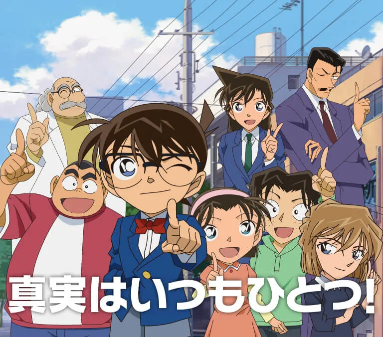
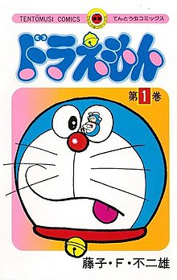

Thám tử lừng danh Conan (名探偵コナン (Danh thám trinh Conan) Meitantei Konan?) là một series manga trinh thám được sáng tác bởi Aoyama Gōshō. Tác phẩm được đăng tải trên tạp chí Weekly Shōnen Sunday của nhà xuất bản Shogakukan vào năm 1994 và được đóng gói thành 105 tập tankōbon tính đến tháng 4 năm 2024. Truyện xoay quanh một cậu thám tử trung học có tên là Kudo Shinichi trong lúc đang điều tra một Tổ chức Áo đen bí ẩn đã bị ép phải uống một loại thuốc độc có thể gây chết người. May mắn là đã sống sót nhưng cơ thể thì lại bị teo nhỏ như một đứa bé 6-7 tuổi. Kể từ đó để tránh bị lộ thân phận thực sự của mình, Shinichi đã lấy tên là Edogawa Conan và chuyển đến sống ở nhà của cô bạn thời thơ ấu Mori Ran cùng với cha của cô ấy là một thám tử tư tên Mori Kogoro với hy vọng một ngày nào đó cậu có thể hạ gục Tổ chức Áo Đen và lấy lại hình dáng ban đầu.

Doraemon (tiếng Nhật: ドラえもん phát âm tiếng Nhật: [doɾaemoɴ]) là một series manga của Nhật Bản do Fujiko F. Fujio và đồng tác giả Motoo Abiko sáng tác từ tháng 12 năm 1969 đến tháng 4 năm 1996 đăng trên tạp chí CoroCoro Comic của nhà xuất bản Shogakukan. Có tổng cộng 821 chương truyện được tuyển chọn đóng gói đưa vào 45 tập tankōbon dưới ấn hiệu Tentōmushi Comics cũng do Shogakukan xuất bản. Manga đã được dịch và xuất bản bằng nhiều ngôn ngữ trên thế giới, trong đó bao gồm cả tiếng Việt do Nhà xuất bản Kim Đồng biên soạn.
